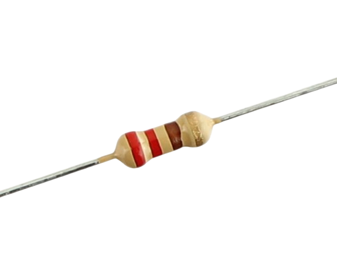
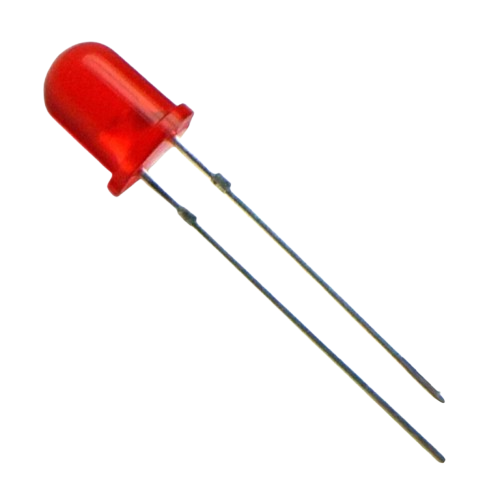
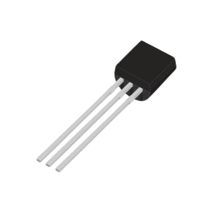
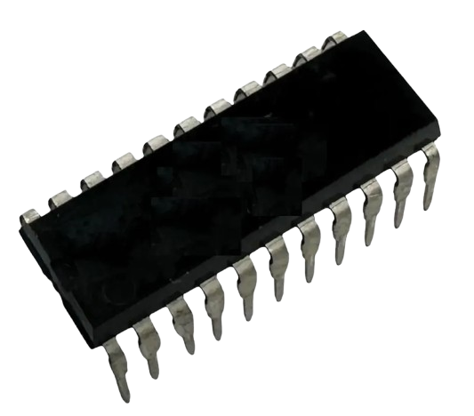
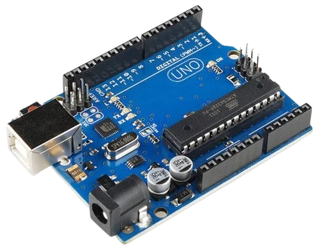
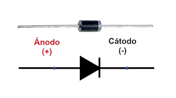
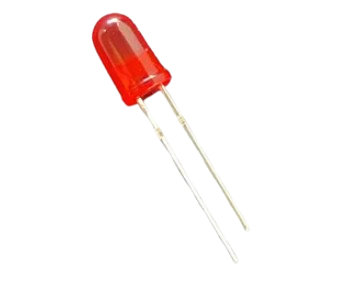
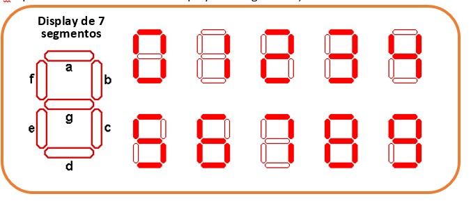
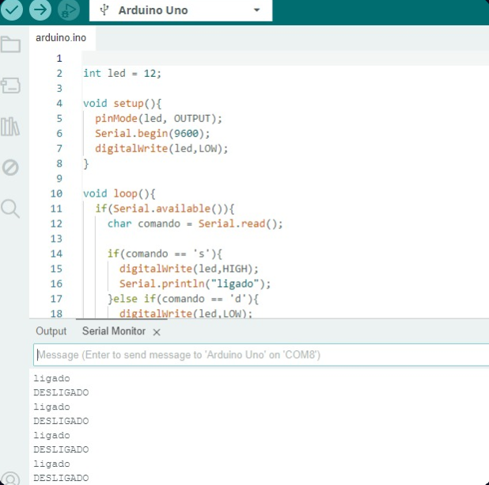

Fundamentos de Eletroeletrônica
Conteúdo sobre eletrônica, sensores, Arduino e scripts para cálculos básicos de circuitos.
1. Componentes Eletrônicos
Resistor
Limita a corrente em um circuito e protege outros componentes.
Diodo LED
Emite luz quando a corrente elétrica passa por ele.
Transistor
Amplifica ou chaveia sinais elétricos em circuitos.
Circuito Integrado
Conjunto de componentes eletrônicos miniaturizados em um chip.
2. Sensores em Sistemas Automatizados
Sensor de Temperatura
Detecta variações de temperatura em ambientes ou equipamentos.
Sensor de Umidade
Monitora níveis de umidade em solos ou no ar.
Sensor de Luminosidade
Detecta a intensidade de luz para controlar iluminação ou alarmes.
3. Arduino
O Arduino é uma plataforma de prototipagem eletrônica de código aberto.
O que é e Para que Serve
Permite criar projetos eletrônicos interativos e sistemas automatizados.
Vantagens e Desvantagens
Vantagens do Arduino
- Fácil de aprender e usar, ideal para iniciantes.
- Código aberto e grande comunidade de suporte.
- Baixo custo e compatível com diversos sensores e módulos.
- Flexível para projetos de robótica, automação e IoT.
Desvantagens do Arduino
- Limitação de processamento e memória.
- Pouca proteção contra sobrecarga elétrica.
- Mais indicado para protótipos do que para produção em larga escala.
Funcionamento
Possui entradas e saídas digitais e analógicas para interagir com sensores e atuadores.
Linguagens de Programação
Principalmente C/C++, mas também suporta Python e outras linguagens com extensões.
4. Entradas e Saídas
Entradas e Saídas Digitais
Detectam sinais ON/OFF e acionam dispositivos como LEDs ou relés.
Entradas e Saídas Analógicas
Permitem leituras e controles variáveis, como sensores de temperatura ou potenciômetros.
5. Cálculo de Circuito com 3 Resistores
Insira os valores da tensão e das resistências para calcular corrente, potência e tensão em cada resistor:
6. Diodos e Displays
Diodo
Permite a passagem de corrente apenas em um sentido.
Diodo LED
Emite luz quando a corrente passa.
Display 7 segmentos
Mostra números de 0 a 9 em um formato digital.
7. Aula Prática – Arduino
Código em C++ desenvolvido na IDE Arduino e upado para a placa Arduino UNO, atribuindo as funções de ligar e desligar o LED através da entrada digital 12.
📌 Código em C++
Print do código desenvolvido na IDE Arduino:
🎥 Vídeo 1
Visualização do LED ligando e desligando:
🎥 Vídeo 2
Outra perspectiva da prática: